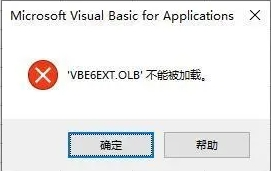
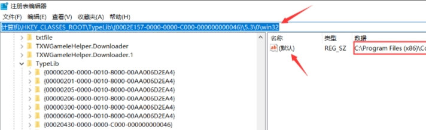

不能加载 VBE6EXT
原因：可能是因为安装又卸载了Office所致，根据经验，Office和WPS卸载均可产生上述问题。
方法1:改变文件位置
1、更改 VB6EXT.OLB 的文件位置（网上最常用方法），重启程序。操作如下：
1 | 文件从C:\Program Files (x86)\Common Files\microsoft shared\VBA\VBA7.1\VB6EXT.OLB |
方法2:修改注册表
1、按 win+R 打开运行，输入 regedit 进入注册表：
1 | 计算机\HKEY_CLASSES_ROOT\TypeLib\{0002E157-0000-0000-C000-000000000046}\5.3\0\win32 |
右击，然后点击修改（或者鼠标连点两次），将下面目录改成你的 VB6EXT.OLB 的目录：C:\Program Files (x86)\Common Files\microsoft shared\VBA\VBA7.1\VB6EXT.OLB
方法3:安装运行库
尝试覆盖安装了一下【微软常用运行库】搜索安装Microsoft visualBasic for Application 7.1 Chinese （Simpified）包，文件名：VBA71_2052.msi
没能启动应用程序Visual Basic

没能启动应用程序 Visual Basic
解决办法就是将C:\Program Files\Common Files\Microsoft Shared下的VBA文件夹删除即可。（不影响office正常使用）